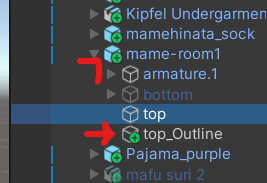

Outlines (New)

Use this free tool - Booth - to create PC looking outlines for quest. Each outline is a duplicate copy of the mesh it is covering, so be mindful of your polygon count and upload size.
The tool is in japanese, but you can mostly memorize the options as it isn't complicated.
To create an outline, click on the mesh in the hierarchy and then click generate outline

its going to try to save the asset somewhere stupid, so just make sure to find your project folder and save it somewhere in Assets there

I recommend making a folder for every avatar in the project in the tool's folder. The path would be (project name) > Assets > nfya > OutlineCreate > Assets > (avatar name) > outline.asset

The tool will add the outline asset in the hierarchy under the same parent as the original mesh

For toggles to work properly, click and drag the outline to be under the original mesh, like this


If you are doing the outlines for something like the face, or any mesh that has blendshapes animated, you want to add a VRCFury blendshape link to the outline asset.

Add a blendshape link component to the outline asset in the inspector, and type the name of the original mesh in the box under ”Name of skinned mesh object in avatar:”. Then click the + and drag the outline into the box under ”Skinned meshes to link:”
The default material for the outline will be a standard lite material called outLine, but you can set whatever material you want in Element 0 on the outline asset.

I keep all my outline materials in the nyfa folder with outLine.